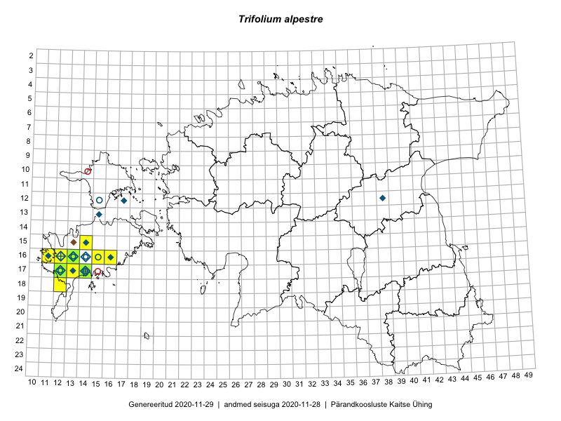

Trifolium alpestre
Uuendatud: 2016-12-02
Kaardile koondatud taksonid: Trifolium alpestre L.

Kaart põhineb 42 kirjel, neist vaatlusi 41 ja eksemplare 1. Taksonit on leitud 9 ruudust.
Kuvatud viited 20 esimesele andmebaasikirjele, ülejäänud PlutoFis
- Toomas Kukk: 2015-08-05: 16-12: GPS punkt
- Eeva-Maria Jeletsky, Tarmo Niitla: 2015-06-27: 11-15: ala
- Mari Reitalu, Sirje Azarov: 2015-05-12: 17-13: ala
- Mari Reitalu: 2014-08-31: 17-12: ala
- Mari Reitalu: 2015-06-19: 17-12: ala
- Mari Reitalu: 2015-06-19: 17-12: GPS punkt
- Mari Reitalu: 2015-06-07: 17-12: ala
- Mari Reitalu: 2015-06-07: 17-12: GPS punkt
- Mari Reitalu: 2015-08-25: 17-12: ala
- Mari Reitalu: 2015-07-02: 17-12: ala
- Mari Reitalu: 2015-08-23: 16-12: ala
- Mari Reitalu: 2015-08-23: 16-12: GPS punkt
- Mari Reitalu: 2015-07-27: 16-12: ala
- Mari Reitalu: 2015-09-04: 16-12: ala
- Mari Reitalu: 2015-09-04: 16-12: GPS punkt
- Mari Reitalu: 2015-06-10: 16-12: GPS punkt
- Mari Reitalu: 2015-06-26: 17-12: ala
- Mari Reitalu: 2015-06-26: 17-12: GPS punkt
- Mari Reitalu, Oliver Parrest: 2015-05-22: 16-13: ala
- Mari Reitalu, Oliver Parrest: 2015-07-27: 16-13: ala